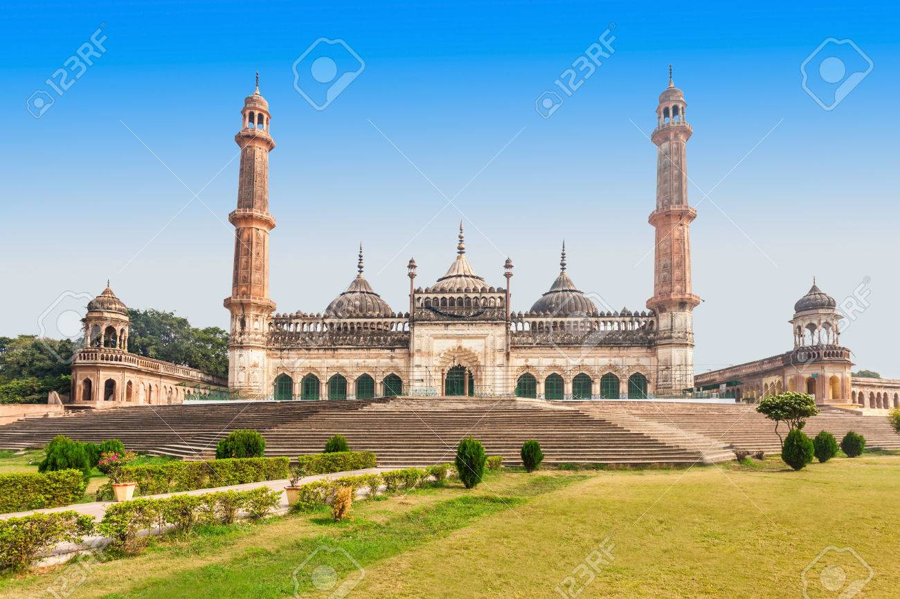

MOSQUE

About Mosque.
A mosque (Masjid) is a place of worship for Muslims, where they gather for prayers, learning, and community activities. The word "Masjid" comes from Arabic, meaning "place of prostration." Mosques hold great significance in Islam, as they serve as centers for spiritual growth and unity among Muslims. The first mosque in Islam is the Kaaba in Mecca, which is considered the holiest site. Another important mosque is Masjid an-Nabawi in Medina, built by Prophet Muhammad (PBUH) in 622 CE, which became a model for future mosques. Over time, mosques have spread across the world, adopting different architectural styles while maintaining key Islamic elements. Most mosques feature a prayer hall, a mihrab (a niche indicating the direction of Mecca), a minaret (a tower from which the call to prayer is announced), and an open courtyard. Some also include madrasas (Islamic schools) for education. Mosques play a vital role in Muslim communities, providing a space for worship, social gatherings, and charity activities.
10 famous Mosque in India.
1. Jama Masjid, Delhi
The Jama Masjid (Masjid-i-Jahan-Numa) in Delhi, India, is one of the largest and most famous mosques in India. Built by Mughal Emperor Shah Jahan between 1650 and 1656, it is an architectural masterpiece of red sandstone and white marble. The mosque can accommodate over 25,000 worshippers and features three grand domes, two towering minarets (40 meters high), and a vast courtyard. It is a major site for Friday prayers and Islamic festivals. Located near Old Delhi’s Chandni Chowk, the Jama Masjid remains an iconic symbol of Mughal architecture and India's Islamic heritage.
2. Mecca Masjid, Hyderabad

The Mecca Masjid in Hyderabad, India, is one of the largest and oldest mosques in the country. Built by Muhammad Quli Qutb Shah in 1617 and completed by Aurangzeb in 1694, it is named after Mecca because bricks from Mecca were used in its construction. The mosque can accommodate around 10,000 worshippers and features massive granite pillars, a grand prayer hall, and a spacious courtyard. It is located near Charminar and is an important historical and religious site for Muslims.
3. Taj-ul-Masajid, Bhopal
The Taj-ul-Masjid in Bhopal, India, is one of the largest mosques in India. Its name means "Crown of Mosques." Construction began in the 19th century under Sultan Shah Jahan Begum of Bhopal but was completed much later in the 1980s. The mosque features pink sandstone walls, three grand domes, two towering minarets, and a vast courtyard. It serves as a major center for Islamic learning and worship, attracting thousands of devotees, especially during Friday prayers and Islamic festivals.
4. Bara Imambara, Lucknow
The Bara Imambara in Lucknow, India, is a historic Islamic complex built in 1784 by Nawab Asaf-ud-Daula. Though not a mosque, it includes the Asafi Mosque, which is used for prayers. The complex is famous for its Bhul Bhulaiya (a maze of narrow passageways) and a grand central hall, one of the world's largest arched halls without support beams. It is an important site for Shia Muslims, especially during Muharram processions. The architecture blends Mughal and Awadhi styles, making it a major historical and tourist attraction.
5. Hazratbal Mosque, Srinagar
The Hazratbal Masjid in Srinagar, Jammu & Kashmir, is a revered Muslim shrine located on the banks of Dal Lake. It is famous for housing the Moi-e-Muqaddas, a sacred relic believed to be a hair strand of Prophet Muhammad (PBUH). The mosque's elegant white marble structure, with a single dome and a minaret, reflects Mughal and Kashmiri architectural styles. Built in the 17th century and later expanded, it is a significant religious site, especially during occasions when the relic is displayed for public viewing.
6. Cheraman Juma Masjid, Kerala
The Cheraman Juma Masjid in Kerala, India, is the first mosque in India, built around 629 CE in Kodungallur. It is believed to have been established by Malik Deenar, a companion of Prophet Muhammad (PBUH), on the orders of Cheraman Perumal, a local king who is said to have embraced Islam. The mosque features a blend of traditional Kerala and Islamic architecture and has been renovated over time. It remains an important center of Islamic heritage and worship in India.
7. Nagina Masjid, Agra
The Nagina Masjid, located inside the Agra Fort in Uttar Pradesh, India, is a beautiful Mughal-era mosque built by Emperor Shah Jahan in the 17th century. Made entirely of pure white marble, it is also called the Gem Mosque due to its elegant design. The mosque features a simple yet graceful structure, with three domes and a prayer hall. It was primarily used as a private mosque for the royal women of the Mughal court. The mosque's arched corridors and intricate carvings reflect classic Mughal architecture.
8. Jami Masjid, Champaner
The Jami Masjid in Champaner, Gujarat, is a stunning mosque built in the 15th century during the rule of Mahmud Begada. It is part of the Champaner-Pavagadh Archaeological Park, a UNESCO World Heritage Site. The mosque features a blend of Hindu and Islamic architecture, with intricate carvings, two tall minarets (30m high), a large central dome, and a beautiful prayer hall with over 172 pillars. Its grand design and symmetrical layout make it one of the finest mosques of the Gujarat Sultanate.
9. Moti Masjid, Bhopal
The Moti Masjid in Bhopal, Madhya Pradesh, was built in 1860 by Sikandar Begum, one of the ruling Begums of Bhopal. It is a smaller but elegant mosque, known for its pure white marble structure, resembling the Moti Masjid in Delhi. The mosque features two small minarets with golden spiked domes, giving it a unique and graceful appearance. It serves as an important place of worship and a symbol of Bhopal’s rich Islamic heritage.
10. Tipu Sultan Mosque, Kolkata
The Tipu Sultan Masjid, located in Kolkata, India, was built in 1832 by Prince Ghulam Mohammed, the youngest son of Tipu Sultan, the ruler of Mysore. This mosque is a fine example of Islamic architecture, featuring multiple domes, tall minarets, and intricate carvings. It serves as an important place of worship and a historical landmark in Kolkata, reflecting Tipu Sultan’s legacy and the city’s rich cultural heritage.

This Blog is developed by:-
*Name- Affan ali
*Class- VIII
*Roll no- 07
*School- Pride International School